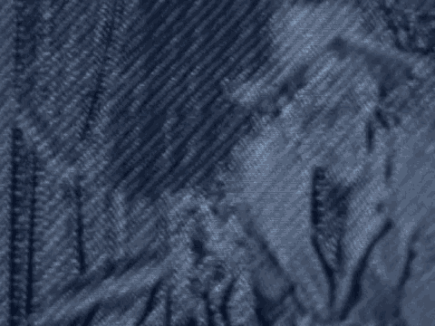

16 the icon.
17 Q. If we could publish 300L, please.
18 Agent Crisalli, could you tell us what the first page
19 of 300L is?
20 A. That's a screen capture of the information window that
21 comes up when you request information on a file.
22 Q. What is at the top there where it says CERTI Info?
23 A. Right below that is this name, SECRT is the name of the
24 file, and to the left of it is the icon that represents that
25 program in the directory listing. Below that you find a
SOUTHERN DISTRICT REPORTERS (212) 805-0300
1770
12slbin4
Crisalli - direct
1 subject called "Kind," and what that does is describe the kind
2 of file that it is. In this case, it says "Ready, Set, Go
3 Document."
4 Below that is the size of the file in kilobytes, and
5 below that is the location on the hard drive where the file is
6 found. And you will find that the Macintosh with the "HD" in
7 parentheses is the name of the volume that was on the
8 notebook, and then below that is the series of folders where
9 you need to go down to find this file if you wanted to.
10 Q. And then below that where it says "created and modified,"
11 can you tell us what that is?
12 A. The "created" is the date and time that the file was
13 created and the "modified" is the date and time, the last time
14 the file was changed in any way.
15 Q. Now, if we could publish page 3 of 300L, and is that one
16 of the pages of the document that's called CERTI?
17 A. Yes, it is.
18 Q. And one of the documents that you were able to retrieve
19 from the computer?
20 A. That's correct.
21 Q. And if we could publish page 2 of Exhibit 300K. Again,
22 Agent Crisalli, this is one of the documents you retrieved
23 from the file of the computer?
24 A. Yes, it is.
25 Q. If we could now publish Exhibit 300P. Agent Crisalli, if
SOUTHERN DISTRICT REPORTERS (212) 805-0300
1771
12slbin4
Crisalli - direct
1 you could tell us what that page is.
2 A. This page is similar to the other one that we had. It's a
3 directory listing of the contents of the hard thrive of the
4 notebook, but this one includes invisible files.
5 Q. I'm sorry, is it invisible or deleted files?
6 A. I'm sorry, you're right. This is the deleted file
7 listing.
8 Q. Now, if you take a look to the left, the first files and
9 folders there, there are names like "Moved" and "Rename" and
10 "Norton." Could you tell us what those files are?
11 A. Those are some of system files that both Norton's and the
12 Macintosh operating system places on a volume when you mount
13 it on a desktop. The desktop, both those desktop files and
14 the Move, Rename are placed there by the operating system.
15 The other ones are the Norton's files.
16 Q. And are those files used to retrieve the deleted files?
17 A. They work with the program to make those files appear,
18 correct.
19 Q. And so we're clear, when you retrieve and store these
20 files, you save them on a different media?
21 A. Yes.
22 Q. And the files and folders that are listed below the folder
23 labeled "Recovered Files," that's actually what you recovered
24 from the mirror image?
25 A. Yes, everything below that was recovered as deleted.
SOUTHERN DISTRICT REPORTERS (212) 805-0300
1772
12slbin4
Crisalli - direct
1 Q. Now, if you looked to the column at the top called
2 "Modified Date" and you see the first several files says
3 "today, 5:30," and there are references in that column to
4 yesterday and it gives a time, can you tell us what that
5 means?
6 A. Those dates -- well, those dates are associated with the
7 files that I used to retrieve the erased files from the hard
8 drive so that's why they have "today's date" and in some cases
9 "yesterday's date."
10 Q. And there are other modified dates in there that have
11 actual dates. For example, there's a reference to August 2,
12 1997. Can you tell us what that date represents?
13 A. Well, even though the file is deleted, it's still retained
14 some of the original attributes, and what this does is it
15 shows you that the date created and the date modified were
16 maintained when the file was restored.
17 Q. Does the modified date represent the date the document was
18 deleted?
19 A. No, it doesn't.
20 Q. If we could now publish Exhibit 300A-2. The first page of
21 this, Agent Crisalli, is this a similar type of information
22 sheet that appears for the non-deleted files you discussed
23 earlier?
24 A. Yes, it is.
25 Q. And the created date and modified date, are those affected
SOUTHERN DISTRICT REPORTERS (212) 805-0300
1773
12slbin4
Crisalli - direct
1 by the fact that the file was deleted?
2 A. No, they're not.
3 Q. If we could now publish Exhibit 300Q.
4 Agent Crisalli, if you could tell us what 300Q is.
5 A. 300Q is a directory listing of the invisible files found
6 on the hard drive.
7 Q. And the list on the left is the actual file names
8 themselves?
9 A. That's correct.
10 Q. And the "Created" and "Modified" column, what do those
11 represent?
12 A. Those also represent the date the file was created and the
13 date it was last modified.
1